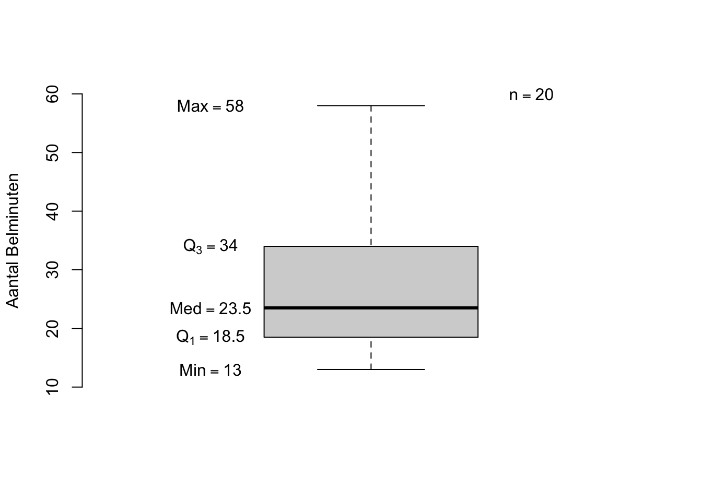
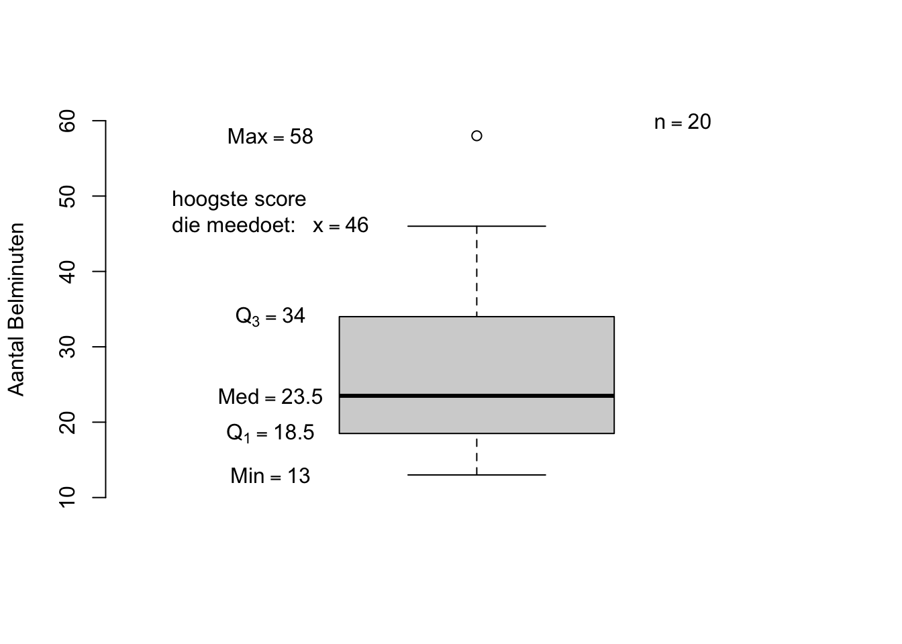
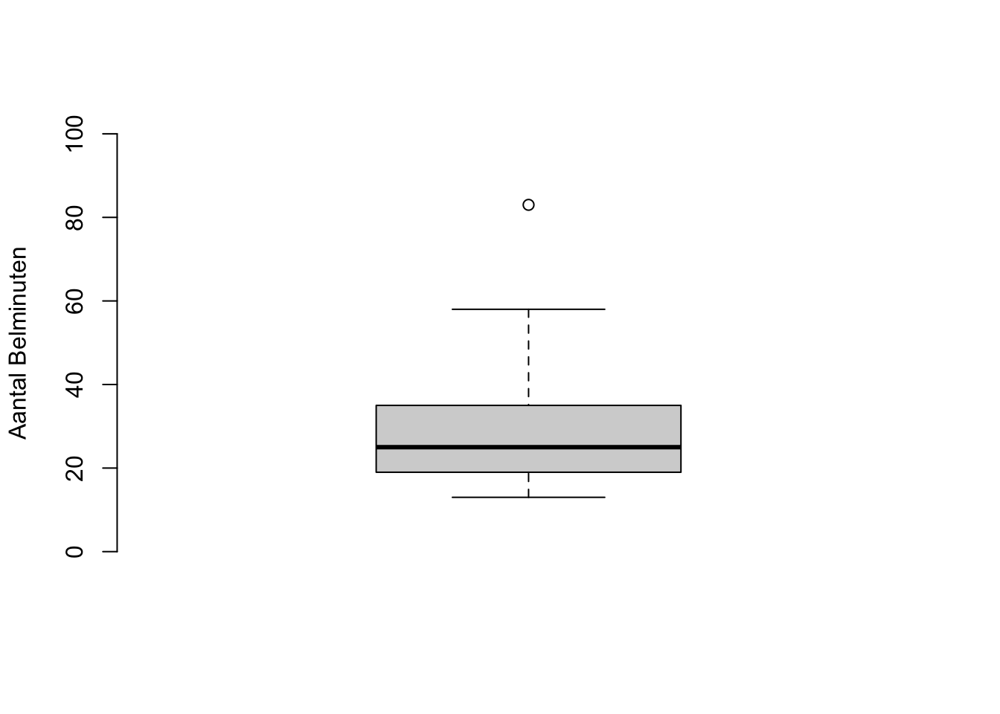

| $i$ | $X_i$ |
|---|---|
| 1 | 13 |
| 2 | 18 |
| 3 | 25 |
| 4 | 58 |
| 5 | 25 |
| 6 | 31 |
| 7 | 39 |
| 8 | 42 |
| 9 | 17 |
| 10 | 35 |
| 11 | 46 |
| 12 | 22 |
| 13 | 18 |
| 14 | 20 |
| 15 | 26 |
| 16 | 14 |
| 17 | 33 |
| 18 | 19 |
| 19 | 20 |
| 20 | 21 |
Hoofdstuk 1 - Het beschrijven van data aan de hand van statistieken, Descriptive Statistics.
Waar ligt de Data?
Als wetenschapper moeten we gebeurtenissen om ons heen kunnen beschrijven. We willen bijvoorbeeld weten hoe slim (in IQ-punten) of hoe lang (in centimers) de respondenten in een steekproef zijn. Dit beschrijven van de verkregen data (de verzameling opgemeten scores van je respondenten of proefpersonen in je steekproef) is eigenlijk altijd stap één van de data-analyse in een onderzoek. Om de scores van één van de variabelen in een dataset te kunnen beschrijven, hebben we twee hoofdvragen nodig.
De eerste vraag gaat over waar de data zich bevindt. Bij deze vraag denk je aan een maat die het centrum of een soort midden van alle datapunten (de opgemeten scores van alle individuen) aangeeft. Het gemiddelde (mean), de mediaan (median) of de modus (mode) kunnen hiervoor gebruikt worden. Afhankelijk van de data, geeft de éne maat een handigere beschrijving dan de andere, maar alledrie de maten zijn bedoeld om aan te geven rond welk punt (getal of waarde) de data (alle waarden in je steekproef) zich bevindt. We noemen deze maten ook wel centrummaten en natuurlijk zijn deze drie centrummaten niet de enige.
Voor de tweede vraag willen we weten hoe de data verdeeld is of hoe de datapunten in je steekproef ten opzichte van elkaar verschillen of variëren. Hierbij kun je denken aan de vraag in hoeverre de verschillende scores bij elkaar of juist verder van elkaar verwijderd liggen. Dit beantwoordt dus de vraag in hoeverre de scores op elkaar lijken (homogeen zijn) of juist verschillen (heterogeen zijn). Om de mate van verschil aan te geven voor de scores voor een bepaalde variabele, gebruiken we de zogenaamde spreidingsmaten zoals de standaardafwijking (standarddeviation) en de variantie (variance). Er zijn uiteraard en wederom meerdere manieren of spreidingsmaten om de boel te beschrijven.
Soms is het goed mis met de data en gedragen de scores zich niet zoals we graag zouden willen zien of handig is voor bepaalde analyses en gebruiken we andere trucjes om toch de data te kunnen beschrijven. Grafisch, dus in een figuur of grafiekje, wordt snel duidelijk hoe de data zich gedraagt (waar de verschillende scores zich bevinden) en dus verdeeld is. Ik zou het hier kunnen gaan vertellen, het middel en het doel, maar een van de belangrijkste lessen geef ik je meteen mee: Eerst doen en dan pas gaan denken! Het lijkt een beetje op de film ‘Karate Kid’, frustrerend maar waar. De leerling in deze film moet allerlei – in eerste opzicht – niet gerelateerde oefeningen doen. Hij wil natuurlijk gewoon vechten. Uiteraard wordt hij dik beloond in één of ander duel waar hem dán pas duidelijk wordt waarvoor hij die zinloze oefeningen eindeloos moest herhalen (muren verven met een bepaalde beweging of zijn jas tot in de eeuwigheid op – en af – hangen). Dat geldt hier in de statistiek (vechten) ook dus en kunnen we het beste maar gewoon beginnen met de opgaven (verven). Voor het grootste deel behandel ik in de opgaven de te leren stof en formules. Je zult dus wel moeten ‘doen’! Succes.
Belgedrag onder Jongeren in Nederland
In een fictief onderzoek werd gekeken naar het belgedrag onder jongeren. In een steekproef (uit de populatie Nederlandse jongeren) van \(20\) personen (\(n=20\), de kleine letter \(n\) staat in de meeste gevallen voor het aantal mensen of onderzoeksobjecten in een steekproef) werd de respondenten gevraagd hoeveel minuten zij de voorgaande week gebruik hadden gemaakt van hun mobiele telefoon om te bellen (dat kan tegenwoordig nog steeds, ik heb het dus niet over scherm-tijd). In de tabel hieronder de verkregen data. Voorlopig gebruik ik ‘\(X_i\)’ ter vervanging van de variabele ‘het aantal belminuten’, zolang ik dus nog in het algemeen spreek over de variabele ‘het aantal belminuten’ en nog niet specifiek weet over welke persoon met welke waarde voor het aantal belminuten, ik het heb. De waarde waar \(X_5\) voor staat, is \(25\) (belminuten). Of anders gezegd: De score \(X\) voor persoon nummer \(i=5\) heeft de waarde \(25\). De kleine letter \(i\) (het subscript) staat dus voor respondent- of proefpersoonnummer. De \(i\)-tjes zijn er eigenlijk slechts ter organisatie en als je dus weet over welke persoon het gaat, gebruik je zijn nummer in plaats van de letter \(i\) (vervang je \(i\) door zijn nummer).
Aan de hand van een aantal statistieken en grafieken en dergelijke gaan we de data beschrijven. Er is dus een verschil tussen een ‘statistiek’ en ‘de data’. De data is de verzameling van de scores (datapunten) in onze steekproef en een statistiek heeft een overstijgende functie. Een statistiek is een beschrijvend getalletje en zegt dus iets over - of beschrijft - de data (als geheel). Voordat we beginnen is het handig om de data (de verschillende scores) op volgorde (rangorde) te zetten, zodat we bijvoorbeeld makkelijk de mediaan kunnen berekenen. Neem de data over en orden de scores van lage naar hoge waarden. Je kunt de verschillende scores opnieuw nummeren en de oorspronkelijke waarden voor \(i\) negeren, zodat nu de persoon met de laagste score, de waarde \(i=1\) krijgt en de persoon met de hoogste score krijgt dus \(i=20\). De verschillende waarden voor \(i\) representeren dan meteen de verschillende rangnummers en deze geven dus de (ordinale) volgorde van de originele scores aan.
Opgaven Belgedrag onder Jongeren in Nederland: Beschrijven
Mediaan, Median
De Mediaan is de waarde voor een variabele zodanig dat \(50\) procent van alle scores onder die waarde valt en \(50\) procent boven die waarde valt. Dus \(50\) procent van de respondenten scoren dus lager dan de mediaan en \(50\) procent van de respodenten scoren dus hoger dan de mediaan. De mediaan is een centrummaat en vertelt je wat de waarde is van de middelste score is.
Opgave 1
- Als eerste statistiek bekijken we de mediaan. De mediaan is een centrummaat en hoort dus bij de vraag waar de data zich bevindt en is de waarde (score) voor de variabele (Aantal Belminuten) behorend bij de middelste observatie, persoon of rangnummer als je de data-punten (scores) dus eerst hebt gerangordend. Wélk rangnummer van de scores ‘draagt’ de mediaan?
- Welke waarde heeft de mediaan? (er is dus een verschil tussen de vraag ‘Waar (bij welke observatie als ze gerangschikt zijn) ligt de mediaan?’ en ‘Wat is de (waarde van de) mediaan?’)
Het eerste en derde Kwartiel, first and third Quartile (\(Q_1\) en \(Q_3\))
Het eerste kwartiel (\(Q_1\)) is die score waaronder \(25\) procent van de data (observaties) valt (en dus \(75\) procent van de scores daarboven). Zo staat het derde kwartiel (\(Q_3\)) voor die score waaronder \(75\) procent van de data valt (en dus \(25\) procent daarboven).
Welke waarden hebben \(Q_1\) en \(Q_3\)? Welke \(X\)-scores vallen in het eerste quartiel?
Geef de Five-Number Summary (minimum , \(Q_1\)) voor de score X.
Teken een boxplot zonder uitbijters (ofwel de zogenaamde outliers of extreme waarden). Betrek dus alle scores bij de boxplot. De twee staarten, aan de onder en bovenkant van de boxplot lopen dus tot en met het minimum en het maximum van de scores.
Om wel rekening te houden met eventuele uitbijters (outliers) gaan we nu een modified boxplot fabriceren. Hiervoor moet je eerst de waarde van de IQR weten (interquartile range). Bereken deze waarde \(IQR = Q_3 - Q_1\), dit is dus (grootte van) de afstand (interval) tussen \(Q_1\) en \(Q_3\). Een score wordt als uitbijter gezien als deze boven de waarde ‘\(Q_3 + 1.5 \cdot IQR\)’ valt en wordt dan slechts als puntje aangegeven (en wordt dus niet in de bovenste staart opgenomen. De bovenkant van de boxplot (staart) eindigt dan bij - of op - de laatste score die nog wel echt mee mag doen en dus nog net op of onder de waarde \(Q_3 + 1.5 \cdot IQR\) valt. Voor uitbijters aan de linker - of dus onderkant - van de verdeling doe je hetzelfde, maar kijk je vanaf \(Q_1\) en dan wel in de tegengestelde richting als bij de andere staart, dus naar beneden. Dus \(Q_1–1.5 \cdot IQR\) is dan de ondergrens van scores die nog mee zouden mogen doen voor de staart aan de onderkant van de boxplot.
Regelmatig is er sprake van scheefheid van de verdeling van de scores in de data (skewness). Is hier sprake van een verdeling die links of rechtsscheef is? Zou het gemiddelde, \(\overline{X}\), links of rechts van de mediaan liggen? Je hoeft het gemiddelde nog niet uit te rekenen, geef slechts een schatting.
De Modus, Mode
De Modus is die score die het vaakst voorkomt, die dus het meest frequent is, dus die gebeurtenis (score) die in de ‘mode’ is. Soms zijn er meerdere waarden die het meest voorkomen. Ook de modus is een centrummaat, wel een beetje een erg rare, want wat het meest voorkomt hoeft toch niet het centrum te zijn? Bij een centrummaat denk ik aan een plaatsbepaling (zoals van een stad, dan geef je vaak het cetrum van die stad aan op de kaart).
Wat is hier de waarde van de modus? Welk probleem ontstaat hier? In hoeverre kunnen we hier zeggen dat de modus een goede beschrijver voor (deze) data is?
Waar zou de mediaan liggen als er een oneven aantal observaties zouden zijn, bijvoorbeeld bij \(21\) scores waarbij de waarde van de nieuwe (en hoogste) score \(83\) is? Teken ook voor deze \(21\) gevens een gewone boxplot en eentje die aangepast is waarin de outliers zichtbaar zijn.
| Rangnummer $i$ | 1 | 2 | 3 | 4 | 5 | 6 | 7 | 8 | 9 | 10 | 11 | 12 | 13 | 14 | 15 | 16 | 17 | 18 | 19 | 20 |
|---|---|---|---|---|---|---|---|---|---|---|---|---|---|---|---|---|---|---|---|---|
| Aantal Belminuten, $X_i$ | 13 | 14 | 17 | 18 | 18 | 19 | 20 | 20 | 21 | 22 | 25 | 25 | 26 | 31 | 33 | 35 | 39 | 42 | 46 | 58 |
Uitwerking 1
- De mediaan ligt tussen de rangnummers \(10\) en \(11\), dus eigenlijk bij rangnummer \(10.5\). In dit geval hebben we maar \(20\) observaties, het middelste rangnummer vinden, is dan vrij eenvoudig. Je kunt dus zeggen wanneer er een even aantal observaties is (bij ons \(n = 20\)), dat de mediaan altijd de data in twee gelijke stukken hakt (twee stukken van \(50\) procent) én de mediaan dus tussen de twee middelste observaties komt te liggen. Wanneer er een oneven aantal observatie zijn wordt de data ook in twee gelijke stukken gehakt, maar ligt de mediaan op de (enige) middelste persoon (of rangnummer). Om het rangnummer van de Mediaan (\(R_{Med}\)) te vinden, kun je ook een formule toepassen (en dat doe ik dus ook meteen):
\[R_{Med} = \frac{n + 1}{2} = \frac{20 + 1}{2} = 21/2 = 10.5\]
\(Med = \frac{22 + 25}{2} = 23.5\) Je neemt hier dus een het gemiddelde van de twee scores die horen bij de twee rangnumers die naast het rangnummer van de mediaan liggen. Soms heb je te maken met veel herhalingen van bepaalde waarden (knopen) rond de mediaan, er zijn verschillende manieren die ook andere waarden als uitkomst voor de mediaan geven, die laat ik hier buiten beschouwing. Het gaat er vooral om dat je snapt dat de mediaan de middelste waarnemingswaarde is en je data dus in twee gelijke stukken hakt qua aantallen observaties!
\(Q_1 = 18.5\) deze waarde is eigenlijk niks anders dan de mediaan van de linker helft van je data, dus behorende bij de eerste tot en met de tiende waarneming. \(Q_3 = 34\) deze waarde is eigenlijk niks anders dan de mediaan van de rechter helft van je data, dus behorende bij de elfde tot en met de twintigste waarneming. Om te kijken bij welk rangnummer \(Q_1\) hoort kun je altijd de volgende formule toepassen (maar bij weinig data kun je dus ook gewoon even met je vingertjes tellen): \[R_{Q_{1}} = \frac{n + 1}{4} = \frac{20 + 1}{4} = 21/4 = 5.25\] Dus \(Q_1\) ligt tussen de vijfde en zesde waarneming we gebruiken dus \(X_5\) en \(X_6\) en nemen van deze twee waarde het gemiddelde: \[Q_1 = \frac{18 + 19}{2} \] Voor \(Q_3\) kunnen we ook eerst bijbehorend rangnummer vinden door een berekening. Je vermenigvuldig \(R_{Q_{1}}\) eigenlijk met een factor \(3\): \[ R_{Q_{3}} = 3 \cdot R_{Q_{1}} = \frac{3 \cdot (n + 1)}{4} = 15.75\] Dus om de waarde van \(Q_3\) te vinden, neem je het gemiddelde van de scores behorend bij de twee dichtst gegelegen rangnummers, dus van \(15\) en \(16\).
The Five−Number Summary: Minimum \(=13\), \(Q_1 = 18.5\), Mediaan \(=23.5\), \(Q_3 = 34\), Maximum \(= 58\). De scores die in het eerste quartiel liggen zijn: \(13\), \(14\), \(17\), \(18\) en nog een keer \(18\).
De boxplot en bijbehorende waarden zijn dus:

- De berekening van de IQR en de bepaling van de grenswaarde voor de outliers aan de bovenkant van de boxplot:
\(\:\:\:\:\:\:IQR = 34−18,5 = 15.5\)
\(\:\:\:\:\:\:1.5 \cdot IQR = 1.5 \cdot 15.5 = 23.25\)
\(\:\:\:\:\:\:Q_3 + 1.5 \cdot IQR = 34 + 23.25 = 57.25\)
De hoogst mogelijke bovengrens van de boxplot, hoger dan deze waarde zou de staart dus nooit kunnen komen, maar de outliers dus wel! En nu de grenswaarde voor de outliers aan de onderkant.
\(\:\:\:\:\:\:Q_1 - 1.5 \cdot IQR = 18.5 - 23.25 = \text{-} 4.75\)
De laagst mogelijke ondergrens van de boxplot, belminuten kunnen niet negatief zijn (toch?), dus no worries. Zie hieronder de uiteindelijke ‘modified boxplot’ en het is deze manier waarop een boxplot standaard (in statistiek programma’s) worden gemaakt:

Rechtsscheef. Omdat er een aantal scores vrij hoog zijn ten opzichte van de rest of het gros, zal het gemiddelde iets omhoog worden getrokken en dus rechts van (of boven) de mediaan liggen.
\(18\), \(50\), \(20\) en \(25\) zijn de modussen, want die komen alle drie het meest (\(2\) keer) voor. Vreemd, maar dit kan gewoon. Blijkbaar zijn er dus meerdere scores in de mode!
Als we \(21\) observaties hadden geteld, was de mediaan toebedeeld aan rangnummer \(11\), dan zouden er dus tien scores onder en boven die waarde vallen. Stel dat de waarde van die 21ste score bijvoorbeeld \(83\) zou zijn, erg hoog dus, dan zou dat niet zoveel uit maken voor de waarde van de mediaan. Die wordt dan de score 25 die hoort bij de elfde persoon (de score van de middelste persoon ingeval van \(21\) scores). Je zou kunnen stellen dat door toevoeging van een score de mediaan slechts een half plekje naar rechts schuift (in ons voorbeeld dus van \(10.5\) naar rangnummer \(11\)) onafhankelijk van de waarde van die toegevoegde score. Omdat de (hoge) waarde van die toegevoegde score dus eigenlijk niet van belang is voor de mediaan, kunnen we ook stellen dat de mediaan robuust is voor (opgewassen tegen) outliers. De mediaan is dus vrij onveranderlijk of stabiel als het gaat om de invloed van outliers in de data op deze statistiek (mediaan). Uitbijters of extreme waarden hebben dus nauwelijks invloed op de waarde van de mediaan.
\(\:\:\:\:\:\:Minimum = 13\).
\(\:\:\:\:\:\:Q_1= \frac{18 + 19}{2} = 18.5\)
Dus eigenlijk de mediaan van de linker helft, deze loopt ook van \(1\) t/m \(10\) en niet van \(1\) t/m \(11\)!
\(\:\:\:\:\:\:Mediaan = 25\)
De mediaan is dus de waarde van de elfde observatie en deelt nu de data in twee gelijke stukken.
\(\:\:\:\:\:\:Q_3 = \frac{35 + 39}{2} = 37\).
\(Q_3\) is dus eigenlijk de ‘mediaan’ van de rechterhelft, deze loopt van rangnummer \(12\) t/m \(21\) en de twee middelste rangnummers daarvan zijn nu \(16\) en \(17\)!
\(\:\:\:\:\:\:Maximum = 83\).
\(\:\:\:\:\:\:IQR = Q_3−Q_1 = 37−18.5 = 18.5\)
De IQR heb je dus weer nodig om een modified boxplot te maken.
\(\:\:\:\:\:\:1.5·IQR = 1.5·18.5 = 27.25\)
\(\:\:\:\:\:\:Q_3 + 1.5·IQR = 37 + 27.25 = 64.25\)
De bovenkant of de rechterstaart van de modified boxplot, loopt dus tot de waarde in de data die nog net onder of even groot is als \(64.25\). De waarde \(58\) valt hier nog (net) onder. De ondergrens van deze boxplot is gewoon weer \(13\) omdat de uiterste grens weer negatief zal zijn en dus sowieso niet zal voorkomen in de data. Je ziet hieronder dat de score \(X=58\) nu we tot de boxplot behoort en dus niet meer als outlier wordt beschaouwd.

JASP Uitwerking Opgave 1
Ik heb alvast een databestand aangemaakt, je hoeft dus niet zelf de getalletjes voor de belminuten in te tikken! Zorg eerst dat je het databestand ‘BelminutenData.xlsx’ download van mijn site http://www.wisi.nl/ en het opslaat in een handige en herkenbare map. Maak dus vooral een nieuwe map (folder) aan op je bureaublad (desktop) voor je ‘JASP gymnaStiekjes’. ik ga er even van uit dat je ‘JASP gymnaStiekjes’ als naam voor je nieuwe map gebruikt. Databestanden komen in velen soorten en maten, ieder programma, zoals ‘Microsoft Word’ maar dus ook ‘JASP’, ‘R’, ‘EXCEL’ of ‘SPSS’ bijvoorbeeld, gebruiken hun een eigen ‘extensie’ in de bestandsnaam van het (data-) bestand. Zo gebruikt ‘Word’ de extensie ‘.docx’ bij een ‘Word’-bestand en een ‘excel’-bestand gebruikt de extensie ‘.xlsx’ voor het databestand (datafile). Soms laat je computer die extensie niet zien. Super irritant is dat. Ik weet wel dat mensen bang worden van te veel informatie, maar beter begrijp je dit wel, zodat je beter je verschillende soorten bestanden van elkaar kunt onderscheiden. Dus check even of je wel de extensie ziet. Zo niet, google dan even op ‘Show or hide filename extensions on Mac of Windows’ om deze optie te veranderen. Vaak als we data willen delen met elkaar dan doen we dat in een format dat de meeste kunnen openen. Meestal is dat een ‘Excel’ (.xlsx) of een ‘SPSS’ (.sav) databestand, maar kunnen dus ook anderen zijn. Voor nu heb ik een excel bestand aan jullie gegeven. Open het dit bestand met eerst maar even met EXCEL, zodat je de data kunt zien. Met JASP kun je dit bestand niet gewoon zo openen, daarvoor moeten we het bestand eerst op een andere manier opslaan. Probeer het toch maar wel even, zodat je ziet dat het echt niet werkt, dus eerst even fout:
De foute manier om een excel-bestand te openen die dus niet werkt:
- Open eerst het programma JASP en probeer het bestand ‘BelminutenData.xlsx’ te openen:
- Klik linksboven op ‘Open’, dan ‘Computer’, dan ‘Browse’ en vervolgens ‘navigeer’ dan naar je folder ‘JASP gymnaStiekjes’ en klik je, heeel hard (dubbel) op ‘BelminutenData.xlsx’.
- Er gebeurt niks, maar dat wist je al.


Als je wilt, kun je op de afbeeldingen, groter in aan aparte browser (tabblad) bekijken door met je cursor op de afbeeldingen te gaan staan, dan op de rechter muisknop drukken drukken en ‘open afbeelding in nieuwe tab’ te kiezen!
De correcte manier om een excel bestand toch te kunnen openen. We gaan eerst het excel bestand ‘BelminutenData.xlsx’ in een ander format, met een andere extensie opslaan. JASP kan bijvoorbeeld wel bestanden met de extensie ‘.csv’ openen (Voor nu niet van belang maar ‘csv’ staat voor ‘Comma Seperated Values’, een manier van opslaan waarin alle waarden (datapunten) dus gescheiden worden door komma’s):
Open het excel bestand ‘BelminutenData.xlsx’, gewoon met het programma EXCEL.
Sla het bestand opnieuw op maar nu met een andere extensie:
Klik op het ‘dropdown’ menu onder ‘File’ (‘Archief’) in de menubalk bovenaan en kies ‘Save as’ (‘Opslaan als’). Als het goed is kom je dan meteen in je ‘JASP gymnaStiekjes’ map.
Je hoeft niet de naam te veranderen, maar dus alleen de extensie, dit doe je door:
Onderaan, bij ‘File format:’ de optie ‘CSV UTF-8 (Comma delimted) (.csv)’ te kiezen.
- Druk dan op ‘Save’, Je krijgt nu waarschijnlijk een waarschuwing te zien (mag je best even lezen hoor), maar klik vooral op ‘Yes’.


Kijk in je folder of er een bestand bij is gekomen met de naam én juiste extensie ‘BelminutenData.csv’
Je kan nu wel, met JASP, dit bestand ‘BelminutenData.csv’ openen. Dus nu weer, binnen het programma JASP klikken om het bestandje te openen;
Klik linksboven op ‘Open’, dan ‘Computer’, dan ‘Browse’ en vervolgens ‘navigeer’ je weer naar je map ‘JASP gymnaStiekjes’ en klik je op de bestandsnaam ‘BelminutenData.csv’.
Ik hoop nu echt dat het databestand zichtbaar is geworden en dat je het data bestand dus succelvol hebt geïmporteerd, kunnen we eindelijk onze statistiekjes draaien en kijken of alles klopt met onze handmatige berekeningen.
Je ziet nu 20 rijen (horizontaal) en 2 kolommen (verticaal). Eén rij staat voor (definiëert) één ‘case’ of onderzoeksobject, bij ons dus een persoon of respondent. In de eerste kolom vind je de respondentnummer ‘id’ (‘id’ voor ‘identitificatie van de respondent) en in de tweede kolom staan de observaties (metingen) voor het aantal belminuten (van de afgelopen week). In totaal hebben we dus \(40\) (\(2\) keer \(20\)) datapunten, terwijl de ’eerste twintig’ puur voor de organisatie, van onze ‘tweede twintig’ datapuntjes dient.


De bedoeling van de opgave 1 was om een beschrijving, weergave of samenvatting te geven van ‘waar’ de scores voor de geobserveerde belminuten in de steekproef zich bevinden. Dus waar we, qua positie en qua grootte van verschillen, de verschillende waarden (datapunten) voor ‘belminuten’ op de ‘getallenlijn’ voor belminuten (dus de variabele of dimensie ‘belminuten’) dus kunnen vinden. in Opgave 1 deden we dit aan de hand van de ‘Five-number summary’, zowel nummeriek aan de hand van statistieken als grafisch (plaatje) aan de hand van een ‘boxplot’. Een van de velen manieren om naar de verdeling van je geobserveerde scores te kijken en die dus voor je publiek (lezers) te kunnen samenvatten. Voor de Five-number summary hebben we het minimum, het eerst kwartiel ‘\(Q_1\)’, de mediaan, het derde kwartiel ‘\(Q_3\)’ en het maximum van voor onze scores nodig. Verschillende programma’s hebben verschillende instellingen voor correcties voor ‘knopen’ in je data. Als je twee of meer dezelfde scores hebt, geven die samen meer gewicht aan die waarde (meer gelijk is anders dan meer ongelijk) en er zijn dus verschillende manieren om daarmee ‘om te gaan’ (er voor te corrigeren). Er zijn ook verschillende correcties om, om te gaan met de ‘achterliggende rangnummers’ van de scores (bij ons heeft de laagste score de waarde \(13\) en heeft deze score dus het laagste rangnummer (rangnummer \(=1\)). Textboeken (deze ook) geven vaak een ‘simpele’ manier voor de berekening software programma’s doen het bijna altijd anders, dus de antwoorden komen vaak niet precies overeen. Zeker bij grote steekproeven, zullen de verschillende benaderingen niet veel uit maken (stiekem hoop ik dat we zo een andere uitkomst krijgen dan wij handmatig gevonden hebben, kunnen we zien hoeveel onrust dat bij jou en mij veroorzaakt). Laten we maar snel gaan kijken.
Klik linksboven op het ‘Descriptives’ icoontje en dan kom je meteen in een interactief scherm;
Links in het scherm kun je variabelen kiezen en opties kiezen en rechts zie je meteen je resultaten veranderen, ‘while you’re on the job’ dus, heel fijn.
Sleep de variabele ‘belminuten’ naar rechts, in het vakje onder ‘Variables’ (of klik er eenmaal op en druk dan op het pijltje dat naar rechts wijst).
Vervolgens klik je op de balk ‘Statistics’ voor meer numerieke beschrijvers en vink de (extra) opties aan die wij nog nodig hebben voor de ‘Five-number summary’ (worden immers, er al twee gegeven, het minimum en het maximum);
Voor het eerste en derde kwartiel vink je ‘Quartiles’ onder het kopje ‘Quantiles’ aan;
Voor de mediaan, vink je ‘Median’ aan (onder ‘Central Tendency’)
Als extraatje meteen ook maar de ‘Interkwartiel Range’ (\(IQR\)).
Voor ons figuur, de boxplot, klik je nog op de balk ‘Plots’ vervolgens alleen nog kiezen welk plaatje je wil zien;
- Kies ‘boxplot’ en geef hem een gezellig kleurtje door ook nog ‘Use color palette’ aan te vinken’


- Hieronder de ‘Descriptive Statistics’ (beetje dubbelop) die we opgevraagd hebben.

ALs je deze uitkomsten vergelijkt met die handmatige van ons, dan zie je dat het minimum, het maximum en de mediaan hetzelfde zijn, behalve dus het eerste en derde kwartiel, \(Q_1\) (‘\(25th\) percentile’) en \(Q_3\) (‘\(75th\) percentile’):
Handmatig berekening: \(Q_1 = 18.5\) en \(Q_3 = 34.0\)
JASP berekening: \(Q_1 = 18.75\) en \(Q_3 = 33.5\)
- De antwoorden zijn dus net even anders, dat betekent dus ook dat de IQR iets verschilt. Boeien, ik hoop dat je het kunt accepteren. De handmatige manier is voor je aller eerste statistiek tentamen (dus check wel de regeltjes bij jouw opleiding), en daarna gebruik je alleen nog maar software applicaties.

Hierboven dus de visuele representatie voor onze data in de vorm van een boxplot. Hij zal dus iets verschillen van die van ons. Maar je ziet nog steeds dat de scores rechtsscheef verdeeld zijn en dat er dus een uitbeiter is aan de rechterkant.
De Five-number summary of een boxplot kun je dus gebruiken als samenvatiing van je data als je te maken hebt met een variabele waarvan je tenminste aanneemt dat deze op interval niveau (of hoger) gemeten is, dus voor echt numerieke variabelen.
Opgave 2
- Een andere manier om grafisch de verdeeldheid van de data te laten zien is een stem-and-leaf plot. De zogenaamde stam met blaadjes met in de stam de tientallen en de blaadjes zijn de waarden of ‘ééntallen’ binnen die tientallen die in de data voorkomen, als een score drie keer voorkomt, krijg je ook drie dezelfde ‘blaadjes’ te zien. Teken een stem-and-leaf plot. Wat kunnen we over de vorm zeggen? Links of rechtsscheef Komt dit overeen met de eerder getekende boxplot?
Uitwerking 2
- De verdeling is rechts scheef, als je de stem- and leaf-plot een kwartslag tegen de klok indraait, zit de staart rechts.
The decimal point is 1 digit(s) to the right of the |
1 | 347889
2 | 0012556
3 | 1359
4 | 26
5 | 8JASP Uitwerking Opgave 2
- Om een stem and leaf plot te maken, klik je weer op Descriptives linksbovenaan in het JASP scherm, verplaats vervolgens de variabele ‘belminuten’ naar de box onder ‘Variables’. Nu de optie ‘Stem and leaf tables’ aanvinken en ‘scale’ laat je gewoon op ‘\(1\)’ staan. Voila.


- De ‘\(1\)’ linksven in de stem and leaf plot lees je als een \(10\), de ‘\(2\)’ daaronder als een ‘\(20\)’. De eerste kolom onder ‘Stem’, lees je dus als tientallen. Rechts van het het eerste verticale streepje (naast ‘\(1\)’) zie je een ‘\(3\)’ staan, deze lees je als een gewone \(3\) (en heeft dus niks met de ‘\(4\)’ erachter te maken). Die eerste ‘\(1\)’ en die eerste ‘\(3\)’ vormen samen het getal ‘\(13\)’. Die eerste ‘\(1\)’ en die eerste ‘\(4\)’ (achter de eerste ‘\(3\)’) vormen samen het getal ‘\(14\)’. Zo zie je dus bijvoorbeeld dat er tussen de waarde \(10\) en \(20\), twee keer het getal \(18\) voorkomt, de meeste getallen tussen de \(20\) en de \(30\) en maar één getal tussen de \(50\) en de \(60\) (namelijk \(58\)). Omdat het merendeel van de getallen tussen de \(10\) en de \(30\) (links) en de staart dus rechts, kunnen we zeggen dat de scores rechtsscheef verdeeld zijn (uitschieters aan de bovenkant)
Opgave 3
Bereken het gemiddelde voor de X-scores ( \(\overline X\)– of E(\(X\))), ook wel de verwachting (of expected value) voor de variabele \(X\). Zeker bij scores die zich ‘wenselijk’ gedragen (hier kom ik later op terug), is het gemiddelde de meest gebruikte statistiek om het centrum van de data te beschrijven.
Loop de voorgaande vragen nog een keer door en bekijk de verschillen tussen de mediaan, de modus en het gemiddelde. Hoe hadden de boxplot en de stem-and-leaf plot eruit kunnen (of moeten) zien zodanig dat het gemiddelde, de mediaan en de modus ongeveer gelijk waren geweest?
Uitwerking 3
\[\overline{X} = \frac{\sum\limits_{i=1}^{i=n}X_i}{n}=\frac{1}{n}\cdot\sum\limits_{i=1}^{i=n}X_i\] Het sommatieteken \(\Sigma\) met \(i=1\) eronder en \(i=n\) erboven wil zeggen dat je datgeen wat achter het sommatieteken staat, in ons geval dus alleen \(X_i\), eerst voor alle waarden van \(i\) (dus \(i=1\) t/m \(i=n=20\)) moet invullen en vervolgens (daarna dus) bij elkaar moet optellen. Als ik alleen de sommatie voor alle \(X\)-waarden zou willen hebben voor \(i=1\) t/m \(i=20\) krijg je dus het volgende (ik gebruik hier de rangschikte scores, maar dat maakt natuurlijk niet uit voor de optelling): \[\sum\limits_{i=1}^{i=20}X_{i}=\left[X_1 + X_2 +X_3 +X_4+X_5+...+ X_{19} +X_{20}\right]\] \[\sum\limits_{i=1}^{i=20}X_{i}=\left[13+14+17+18+18+...+46+58\right]=542\] Om een sommatieteken uit te werken gebruik ik vaak rechte haakjes. Alles links van het eerste is-gelijk-aan-teken noem ik ook vaak wel dat ‘ding’ (sommatie van alle \(X_i\) - scores), maar dat ding heeft dus een waarde van 542 (als je hem netjes en dus correct hebt uitgewerkt). Let op: vaak staat er niks onder of boven het sommatieteken, ze bedoelen dan dat je ‘gewoon’ elke waarde moet nemen. \[\overline{X}=E\left(X\right)= \frac{\sum\limits_{i=1}^{i=n}X_i}{n}=\frac{\left[13+14+17+18\;+...+\;45+58\right]}{20}=\frac{542}{20}=27.1\] of dus: \[\overline{X}=E\left(X\right)= \frac{1}{n}\cdot\sum\limits_{i=1}^{i=n}X_i=\frac{1}{20}\cdot\left[13+14+17+18\;+...+\; 45+58\right]=\frac{1}{20}\cdot 542=27.1\] Zeker voor later is het handig als je beseft dat delen door \(20\) hetzelfde is als vermenigvuldigen met het omgekeerde van \(20\). Het omgekeerde van een getal is hetzelfde als ’\(1\) gedeeld door dat getal, in dit geval dus \(\frac{1}{20}\).
Het gemiddelde, de mediaan en de modus verschillen van elkaar. Als de boxplot of de stem-and-leaf plot perfect symmetrisch waren geweest, waren het gemiddelde en de mediaan aan elkaar gelijk geweest. De modus is een beetje een apart verhaal, maar ook hier geldt grofweg hetzelfde. Bij symmetrie in je data (en een normaal-verdeling, kom ik later op terug) zou je wel verwachten dat de modus hetzelfde zou moeten zijn als het gemiddelde en de mediaan!
Hoe is de data verdeeld? Spreidingsmaten.
In paragraaf 1.1 hebben we gekeken naar de vraag ‘Waar ligt de data?’ Nu gaan we kijken in hoeverre de data verdeeld is. Als je weet waar (het gros van) de data zich bevindt kun je een voorspelling doen voor iemand uit je steekproef – of zelfs buiten je steekproef, bijvoorbeeld iemand uit de rest van de populatie. De data uit het belgedrag onderzoek heeft als laagste waarde een score van \(13\) en als hoogste een score van \(58\). Als je dan toch een voorspelling of gok moet doen voor een willekeurig persoon uit je steekproef, is het wel handig als je in ieder geval een waarde tussen deze twee uiterste doet. Het gemiddelde is vaak de beste gok mogelijk. Niet iedereen – of vaak zelfs niemand - binnen je steekproef heeft precies dezelfde waarde als het gemiddelde, maar toch is het handig om het gemiddelde als beste gok of voorspelling te gebruiken. Het gemiddelde gebruiken als beste gok, wil dus ook niet zeggen dat je dan altijd precies goed gokt, maar wel dat je er gemiddeld gezien (als je dus vaker dan 1 keer zou gokken) er het dichtst bij zit met je gok. Anders gezegd: als je het gemiddelde gebruikt als beste voorspelling voor een willekeurig persoon uit je steekproef, zal je gemiddelde gokfout het kleinst zijn. Wanneer de scores van de verschillende proefpersonen in een steekproef dicht bij elkaar liggen, dan zal het duidelijk zijn dat de gemiddelde gokfout ook kleiner zal zijn dan als de proefpersonen onderling juist grotere verschillen vertonen op hun scores (verder van elkaar liggen). De gemiddelde gokfout heet ook wel de standaardafwijking of standaarddeviatie (de officiële naampjes) en is dan ook een heel handige en veel gebruikte spreidingsmaat. Zoals je later niet zal ontgaan: de standaardafwijking is heilig binnen de statistiek. We gaan verder op de data uit het belgedrag onderzoek. Voor de volgende vragen is het het handigst als je meteen ook JASP (of R) gebruikt om je handmatige (rekenmachine) berekeningen te controleren. Open het bestand ‘belminuten.sav’ met JASP. Hier nog even de data in een tabelletje.
| $i$ | $X_i$ |
|---|---|
| 1 | 13 |
| 2 | 18 |
| 3 | 25 |
| 4 | 58 |
| 5 | 25 |
| 6 | 31 |
| 7 | 39 |
| 8 | 42 |
| 9 | 17 |
| 10 | 35 |
| 11 | 46 |
| 12 | 22 |
| 13 | 18 |
| 14 | 20 |
| 15 | 26 |
| 16 | 14 |
| 17 | 33 |
| 18 | 19 |
| 19 | 20 |
| 20 | 21 |
Opgaven Belgedrag onder Jongeren in Nederland: Spreidingsmaten
Opgave 4
Bereken het gemiddelde voor de X-scores, ook wel de verwachte waarde (of expected value) voor de variabele X.
Van waar tot waar bevinden zich de mogelijke scores? Hoe groot of lang is de lengte van het interval waarop de geobserveerde scores zich bevinden? Anders gezegd: hoe groot is de spreidingsbreedte (range) van onze scores?
Als je het gemiddelde gebruikt als beste gok voor een willekeurige score, wat is dan de kleinste en wat is dan de grootste gokfout (absoluut gezien)? Geef een schatting voor de gemiddelde gokfout. Wat ik onder een gokfout voor een willekeurige persoon in je steekproef versta, is de afstand tussen de geobserveerde score van die persoon tot het gemiddelde. In het geval van belminuten, onze variabele, is het dus het verschil (afstand, afwijking) tussen de score van een persoon en het gemiddelde voor het aantal belminuten (\(X_i\)), ook wel zijn individuele afwijking tot het gemiddelde genaamd. Als een persoon rechts (boven) van het gemiddelde zit qua score dan zien wij dit als een positieve afwijking en negatief als hij zich links van het gemiddelde bevindt. In welke volgorde moet je dan telkens de twee waarden van elkaar aftrekken om niet onterecht een positieve (of negatieve) afwijking te vinden? We gaan over tot de echte berekening van de standaardafwijking. Handmatig is het een hoop werk. Aangezien we meestal met statistiek programma’s zoals JASP en R werken, hoeven we dit zelf dus eigenlijk nooit te doen. Waarom gaan we dit dan doen? Omdat het de nodige rekenvaardigheid en inzichten zal verschaffen die we nodig hebben om later verdere stappen te kunnen nemen. De standaardafwijking is dus de gemiddelde gokfout als je het gemiddelde zou gebruiken als beste gok, of ook wel de gemiddelde afwijking (van een observatie) naar het gemiddelde (voor alle observaties). Je zou misschien kunnen denken: dan tel je toch gewoon alle individuele afwijkingen bij elkaar op en deel je het totaal door het aantal afwijkingen? Maar helaas, het idee is wel juist, maar we komen onderweg een aantal problemen tegen waar we een correctie voor zullen moeten maken.
Uitwerking 4
- \(\overline{X}=27.1\).
\[\overline{X}= \frac{1}{n}\cdot\sum\limits_{i=1}^{i=n}X_i=\frac{1}{20}\cdot\left[13+14+17+18+18+...+45+58\right]=\frac{1}{20}\cdot 542=27.1\]
De geobserveerde scores lopen vanaf \(13\) (minimum) tot en met \(58\) (maximum). De spreidingsbreedte of range wordt dan: \(Max - Min = 58 - 13 = 45\). Het interval of lijnstukje waarop zich dus de gemeten scores bevinden, is dus \(45\) (Belminuten) lang.
individuelegokfout \(= X_i - X\) kleinstegokfout = \(X_{13} - X = 26 - 27.1 = \text{-}1.1\) grootstegokfout = \(X_{20} − X = 58 − 27.1 = 30.1\) Ik heb hier dus de nummering voor de \(i\)-tjes gebruikt van de scores die we al op volgorde hadden gezet. De grootte van een gokfout hangt dus niet af van of het negatief of positief is, maar wel van de (absolute) afstand naar \(0\). De kleinste afwijking is dus \(\text{-}1.1\) omdat die het dichtst bij \(0\) ligt. Voor een voorlopige schatting voor de gemiddelde gokfout (standdaardafwijking) kunnen we het beste ergens tussen (in het midden) deze twee gokfouten in gaan zitten, ongeveer 16 dus. Na berekening zullen we zien of we ongeveer goed zaten.
Opgave 5
Maak een \(21\) x \(4\) tabel (\(21\) rijen en \(4\) kolommen). Zet vanaf de tweede rij, in de eerste kolom de nummering \(1\) t/m \(20\) (de i-tjes) en daarachter in de tweede kolom de bijbehorende X-scores. Op de eerste rij in het eerste vakje zet je een ‘\(i\)’ en in het tweede vakje (in de eerste rij nog steeds) zet je ‘\(X_i\)’. Bereken nu voor iedere persoon (observatie) in onze steekproef zijn individuele afwijking naar het gemiddelde, dus de gokfout die je zou maken als je voor die persoon het gemiddelde zou nemen voor zijn voorspelling en dan zou berekenen hoeveel hij er dus naast zit. Iedereen die links van het gemiddelde zit, moet uiteindelijk dus ook een negatieve waarde als gokfout krijgen. Zet deze waarde in de derde kolom.
Eigenlijk stuiten we hier al op het eerste probleem. Als we - volgens het verkeerde idee (de gokfouten optellen en delen door het aantal) - de individuele afwijkingen nu zouden optellen, dus de sommatie ervan zouden nemen, welke waarde krijgen we dan? Om dit probleem te omzeilen kwadrateren we eerst alle gokfouten voordat we ze gaan optellen. Zet de gekwadrateerde gokfouten in de vierde kolom. Komen in deze kolom nog negatieven waarden voor?
Als je de waarden in de vierde kolom zou optellen, hoe zou je die waarde in woorden kunnen omschrijven? Bereken deze waarde.
Vrijheidsgraden, Degrees of freedom
Hier stuiten we op het tweede probleem als we het verkeerde idee zouden volgen. Volgens het verkeerde idee zouden we nu de gevonden kwadratensom (de som van alle gekwadrateerde afwijkingen) moeten delen door het aantal afwijkingen of observaties, \(n\). We hadden immers \(20\) gokfouten berekend en we willen weten wat de grootte is van de gemiddelde gokfout. Maar zijn er ook daadwerkelijk \(20\) gokfouten bij \(20\) observaties? Stel je bent bij een echtpaar met drie kinderen (drie observaties) thuis en het echtpaar vertelt je dat deze drie kinderen gemiddeld een leeftijd hebben van 10 jaar, maar ze spelen nu buiten. Wanneer het eerste kind thuis komt, roep jij natuurlijk dat dat kind wel 10 jaar oud zal zijn, je bent immers een wetenschapper en gaat dus uit van de beste gok! Het blijkt echter dat het kind 8 jaar is. Voordat het tweede kind binnenkomt roep je natuurlijk weer dat ook dat kind wel 10 jaar zal zijn, maar helaas je hebt het alweer mis want het is \(9\) jaar oud. Alleen het derde kind moet nog thuis komen, maar welke leeftijd zou je nu ‘gokken’? Omdat je weet dat er drie kinderen zijn, kun je nu de leeftijd van het laatste kind uitrekenen en hoef je dus niet meer te gokken! Samen (dus opgeteld) moeten de kinderen \(30\) jaar oud zijn om een gemiddelde leeftijd van \(10\) te krijgen. Je kan dus voordat het derde (laatste) kind binnenkomt al zeggen dat het \(13\) jaar oud zou moeten zijn. In dit geval maak je dus eigenlijk maar twee gokfouten omdat de laatste waarneming ‘vast’ ligt als de voorgaande bekend zijn. Je mag hier zeggen dat 2 observaties ‘de vrijheid’ hebben en dat er \(1\) observatie dus vast ligt. In een set of verzameling van \(20\) observaties hebben \(19\) observaties dus de ‘vrijheid’ en ligt er dus 1 vast (die je dus niet hoeft te gokken, maar gewoon kan berekenen, als je die andere \(19\) observaties weet). In het algemeen zeggen we: een set observaties van n groot heeft \(n-1\) vrijheidsgraden of degrees of freedom (df). Wanneer we de standaardafwijking willen uitrekenen, delen we de kwadratensom door het aantal vrijheidsgraden en dus niet door het aantal observaties! Dit doen we dus als correctie voor die ene gokfout die we dus eigenlijk niet maken. Blijf qua idee wel denken dat we de kwadratensom ‘gewoon’ door het aantal observaties delen (alleen dus gecorrigeerd voor die ene gokfout die we niet maken). Later in de statistiek komen we complexere berekeningen tegen voor het aantal vrijheidsgraden bij een bepaalde probleemstelling of analyse. Ik zal je er nu niet mee lastig vallen.
Deel de kwadratensom door bijbehorend aantal vrijheidsgraden, df = n - 1 (‘df’ staat voor degrees of freedom). Wat hebben we hier in woorden berekend, wat is hier de officiële benaming voor?
De variantie en de standaardafwijking zijn verwant aan elkaar. Om van de variantie naar de standaardafwijking te komen, moet je alleen nog de wortel nemen. Als je van de standaardafwijking naar de variantie wil, moet je alleen nog kwadrateren. Bereken de gemiddelde gokfout ofwel de standaardafwijking Sx.
Hoe groot zou het gemiddelde en de standaardafwijking zijn als iedereen in onze steekproef drie minuten hoger had gescoord?
Stel dat je het aantal bel_minuten_ wil omzetten naar het aantal bel_seconden_, wat zou dan gebeuren met het gemiddelde, de standaandafwijking en de variantie? Om de originele scores in minuten te veranderen (te transformeren) naar belseconden, zul je dus elke score moeten vermenigvuldigen met een factor \(60\) (\(1\) minuut is \(1 \cdot 60 = 60\) seconden). Dit kun je doen en alles opniew uitrekenen. Gelukkig kan het óók sneller!
Je kunt je de standaardafwijking ook op een andere manier voorstellen. Als je de scores uitzet zoals in figuur 1.3 hieronder, kun je verticale lijntjes trekken. Elk beginnend van af het gemiddelde (\(\overline{X} = 27.1\), de horizontale stippel lijn) tot aan de hoogte van een score. De gemiddelde lengte van die blauwe lijntjes is dan de standaardafwijking (wel dus gecorrigeerd voor het aantal vrijheidsgraden).

Uitwerking 5
- De tabel ziet er zo uit:
| $i$ | $X_i$ | $X_i - \overline{X}$ | $(X_i - \overline{X})^2$ |
|---|---|---|---|
| 1 | 13 | -14.1 | 198.81 |
| 2 | 14 | -13.1 | 171.61 |
| 3 | 17 | -10.1 | 102.01 |
| 4 | 18 | -9.1 | 82.81 |
| 5 | 18 | -9.1 | 82.81 |
| 6 | 19 | -8.1 | 65.61 |
| 7 | 20 | -7.1 | 50.41 |
| 8 | 20 | -7.1 | 50.41 |
| 9 | 21 | -6.1 | 37.21 |
| 10 | 22 | -5.1 | 26.01 |
| 11 | 25 | -2.1 | 4.41 |
| 12 | 25 | -2.1 | 4.41 |
| 13 | 26 | -1.1 | 1.21 |
| 14 | 31 | 3.9 | 15.21 |
| 15 | 33 | 5.9 | 34.81 |
| 16 | 35 | 7.9 | 62.41 |
| 17 | 39 | 11.9 | 141.61 |
| 18 | 42 | 14.9 | 222.01 |
| 19 | 46 | 18.9 | 357.21 |
| 20 | 58 | 30.9 | 954.81 |
| $\sum\limits^{i=9}_{i=1}{X_i} = 542$ | $\sum\limits^{i=9}_{i=1}{(X_i-\overline{X})} = 0$ | $\sum\limits^{i=9}_{i=1}{(X_i-\overline{X})^2} = 2665.8$ |
De optelling van de getalletjes in de derde kolom is \(0\), de afwijkingen heffen elkaar op! Qua berekening ziet de formule en de uitwerking er als volgt uit: \[\sum\limits_{i=1}^{i=20}\left(x_i-\overline{x}\right)=\left[\left(13−27.1\right)+\left(14−27.1\right)+......+\left(46−27.1\right)+\left(58−27.1\right)\right]=0\] \[\sum\limits_{i=1}^{i=20}\left(x_i-\overline{x}\right)=\left[\left(\text{-}14.1\right)+ \left(\text{-}13.1\right)+......+\left(18.9\right)+\left(30.9\right)\right]=0\] \[\sum\limits_{i=1}^{i=20 }\left(x_i-\overline{x}\right)=\left[ \text{-}14.1+ \text{-}13.1 +......+ 18.9+30.9\right]=0\] Je moet dus voor elke observatie of persoon het gehele stuk achter het sommatieteken invullen en uitrekenen, daarna ga je dus pas optellen (sommeren).
Uiteraard kun je op verschillende manieren uitleggen waar de optelling van wat er in de vierde kolom berekend is, voor staat. In ieder geval is het qua formule:
\[\sum\limits_{i=1}^{i=20}\left(x_i-\overline{x}\right)^2\] Weer zo’n ‘ding’, maar nu al een stuk complexer dan dat we eerder zijn tegen gekomen. Voordat ik tot benoeming van het ding over ga, eerst maar ‘even’ de volledige berekening in stapjes: \[\sum\limits_{i=1}^{i=20}\left(x_i-\overline{x}\right)^2 =\left[\left(13-27.1\right)^2+\left(13-27.1\right)^2+...+\left(46-27.1\right)^2+\left(58-27.1\right)^2\right]\] \[\sum\limits_{i=1}^{i=20}\left(x_i-\overline{x}\right)^2=\left[\left(\text{-}14.1\right)^2+\left(\text{-}13.1\right)^2+...+\left(18.9\right)^2+\ \left(30.9\right)^2\right]\] \[\sum\limits_{i=1}^{i=20}\left(x_i-\overline{X}\right)^2=\left[198.81+171.61+...+357.21+954.81\right] = 2665.8\] De uitkomst is dus \(2665.8\), nu nog een benaming. Je kunt zeggen dat de optelling van alle gekwadrateerde gokfouten \(2665.8\) is. Of iets moeilijker, maar hetzelfde: \(2665.8\) is de sommatie van de gekwadrateerde individuele afwijkingen van een observatie naar het gemiddelde voor \(i=1\) tot en met \(i=20\). Kortweg noemen we dit een kwadratensom (ten opzichte van het gemiddelde) of ook wel in het engels: the Sum of Squares Total of afgekort ‘SST’.
- De uitkomst van wat we hier berekenen noemen we de variantie (variance) van de variabele \(X\) of ook wel \(S_{x}^{2}\). Maar wat betekent het? Het is de gemiddelde gekwadrateerde afwijking naar het gemiddelde. Of in meer normalere woorden: de gemiddelde gekwadrateerde gokfout. \[S_x^2=\ \frac{\sum\limits_{i=1}^{i=n}\left(X_i-\overline{X}\right)^2}{n-1}=\frac{1}{n-1}\cdot \sum\limits_{i=1}^{i=n}\left(X_1-\overline{X}\right)^2\] Delen door een getal (19 in ons geval) is hetzelfde als vermenigvuldigen met het omgekeerde (\(\frac{1}{19}\)). \[S^2_x=\frac{2665.8}{20-1}=\frac{2665.8}{19}=\frac{1}{19}\cdot2665.8 = 140.3053\] Ik heb hier afgerond op vier decimalen. Blijkbaar is de gemiddelde gekwadrateerde gokfout dus (afgerond) gelijk aan \(140.3053\). Dit getal is nog niet handig. Veel handiger en makkelijker te interpreteren is de gewone gemiddelde gokfout en dus niet de gekwadrateerde. Omdat de optelling van de gewone afwijkingen 0 was, hadden we ze eerst gekwadrateerd. Er volgt dus nog 1 stap, we zijn er dus bijna!
5.\[S_x=\sqrt{S_x^2} = \sqrt{140.3053} = 11.845\] Eindelijk: we kunnen nu dus zeggen dat de mensen in onze steekproef gemiddeld 27.1 minuten bellen (in de afgelopen week welliswaar) en dat de personen in onze steekproef gemiddeld \(11.8\) minuten daar vandaan zitten (zowel daaronder als daarboven). We hebben nu dus eindelijk een idee in hoeverre de respondenten in onze steekproef verdeeld zijn op de variabele \(X\), ‘aantal belminuten in de afgelopen week’. De waarde \(11.8\) komt redelijk overeen met de eerder geschatte waarde voor de standaardafwijking in opgave 1.4b. Daar had ik ongeveer 16 gezegd. De berekende waarde \(11.8\) is kleiner omdat er naar verhouding meer kleine gokfouten zitten dan grote, vandaar de iets kleinere waarde.
- Het gemiddelde schuift drie punten op naar boven/rechts. \[ \overline{X}_{nieuw}= 27.1 + 3 = 30.1\] Als iedereen qua score hetzelfde verandert, verandert het gemiddelde dus gewoon mee, op dezelfde manier. Voor de standaardafwijking maakt het niks uit, die blijft gelijk. De individuele gokfouten blijven hetzelfde, de gemiddelde gokfout dus ook. Het enige wat verandert is waar iets gebeurt (zich de scores bevinden), maar de onderlinge verschillen tussen de scores veranderen dus niet. Vandaar dat een centrummaat dus wel verandert maar een spreidingsmaat niet.
7.Om een oude of originele score te veranderen en dus een nieuwe getransformeerde score te maken: \[X_{nieuw} = b \cdot X_{origineel}\] waarbij ‘\(b\)’ voor het getal staat waarmee je moet vermenigvuldigen. In ons geval is de waarde van \(b\) dus \(60\) omdat we van minuten naar seconden willen gaan. Om de nieuwe standaardafwijking (\(S_{nieuw}\)) voor de nieuwe scores in één keer uit te kunnen rekenen gebuik je de volgende formule: \[S_{nieuw} = b \cdot S_{oud}\] \[S_{nieuw} = 60 \cdot 11.845 = 710.7\] De nieuwe standaardafwijking (\(S_{x_{nieuw}}\)) heeft dus een waarde van \(710.7\). En om in een keer te springen van de originele variantie (\(S_{oud}^2\)) naar de nieuwe variantie (\(S_{x_{nieuw}}^2\)) gebruik je een kwadraatje in je formule (leuk hè?): \[S_{nieuw}^2 = b^2 \cdot S_{oud}^2\] \[S_{nieuw}^2 = 60^2 \cdot 140.3053 = 3600 \cdot 140.3053 = 505099.1\] De nieuwe variantie (\(S_{x_{nieuw}}^2\)) heeft dus een waarde van \(505099.1\).
JASP Uitwerking Opgave 4, 5, 6 en 7
We hadden het gemiddelde voor het aantal belminuten natuurlijk allang opgevraagd, je kreeg het gemiddelde (en de standaardafwijking) gewoon kado bij de eerste opgave a.d.h.v. ‘Descriptives’. Ik maak graag gebruik van deze gelegenheid om wat tussen antwoorden (zoals individuele gekwadrateerde afwijkingen) te checken. Om dit te doen, gaan we wat nieuwe variabelen (kolommen) aanmaken in ons databestand. Dus open weer even, vanuit het programma JASP, het ‘BelminutenData.csv’ databestand en sla het bestand meteen even op ondere een andere naam (zodat we het originele bestand altijd nog hebben):
- Druk op het icoontje voor het ‘Main Menu’ linksboven en kies ‘Save as’, vervolgens ‘Computer’ en kies dan ‘Browse’ of meteen de folder waar je het bestand wil opslaan.
- En natuurlijk kies je dan een naam die te herleiden is naar wat je doet: dus bijvoorbeeld “BelminutenDataOpgave4en5.csv”.
- Druk op het icoontje voor het ‘Main Menu’ linksboven en kies ‘Save as’, vervolgens ‘Computer’ en kies dan ‘Browse’ of meteen de folder waar je het bestand wil opslaan.


Om de variantie (\(S_x^2=140.3053\)) en de standaardafwijking (\(S_x=11.845\)) handmatig te berekenen, hebben wij een aantal tussen stappen genomen, die gaan we nu met JASP:
- Voor het gemiddelde moesten we de som van de scores hebben (en dan nog delen door het aantal)
- Neem voor iedereen de individuele afwijking van het gemiddelde: \(X_i - \bar{X}\)
- voor iedereen de individuele afwijking kwadrateren: \((X_i - \bar{X})^2\)
- De som berekenen van alle individuele gekwadrateerde afwijkingen, dus de ‘kwadratensom’: \(\sum\limits_{i=1}^{i=n}(X_i - \bar{X})^2\)
- Voor de variantie deel je de kwadratensom door het aantal vrijheidsgraden: \(S_x^2=\frac{\sum\limits_{i=1}^{i=n}(X_i - \bar{X})^2}{n-1}\)
- Voor de standaardafwijking neem je nog de wortel van de variantie: \(S_x = \sqrt{S_x^2}\)
Stap \(2\) en \(3\) kunnen we doen met twee nieuwe variabelen (kolommen met data). Stap \(4\) weer aan de hand van ‘Descriptives’. Voor tweede stap heb je dus wel het gemiddelde vast nodig en die is \(\bar{X}=27.1\); Nu kunnen we voor iedereen zijn individuele afwijking laten uitrekenen:
Druk op het plusje rechtsboven de kolom voor ‘belminuten’ om een nieuwe kolom te maken
In dit scherm kun je een naam geven aan je nieuwe variabele en kiezen of je deze met een ‘R-code’ wilt aanmaken of met het ‘handje’ (drag and drop gedoe).
Ik heb de nieuwe variabele de naam ‘ind_afw’ gegeven, je mag ook andere namen verzinnen natuurlijk (mocht je rare leestekens gebruiken, kijk dan wel of JASP het accepteerd, een ‘laag streepje of underscore’ is in ieder geval prima)
Al is de ‘R-code’ eigenlijk handiger om een nieuwe variabele te brekeken, we doen het nu toch even met het ‘handje’ (net even iets intuïtiever, maar geeft wel minder mogelijkheden). Een indivuele afwijking is ook gewoon een numerieke variabele en we kunnen dus de standaard optie ‘Scale’ (interval meetniveau en hoger) aan laten staan. Kies nu ‘Create Column’,
Je ziet nu een nieuwe lege kolom, met een raar \(F_x\)-tekentje en de variabelenaam ‘ind_afw’ erboven.
Je ziet ook een raampje waar we (formule voor) de berekening kunnen invoeren. Gaan we doen, drag, drop and type!


Wij willen het verschil tussen de observatie (\(X_i\) of ‘belminuten’) en het gemiddelde. En natuurlijk in de volgorde van “Observed - Expected”, bij ons dus: ‘belminuten’\(- 27.1\). Sleep dus de variabele ‘belminuten’ naar het raampje.
Vervolgens sleep je het min-teken erbij.
Dan type je nog, waar die drie puntjes staan, ‘\(27.1\)’ en druk dan op ‘Compute column’.
Nu zie je, als het goed is, een nieuwe kolom naast de variabele ‘belminuten’ met de naam ‘ind_afw’ met links een lineaaltje met een soort ‘\(F_x\)’-teken (zodat je straks herkent dat je zelf die kolom/variabele hebt aangemaakt). Druk op het zwarte kruisje (helemaal rechts naast het de ‘i’ voor extra hulp) om het ‘rekenscherm’ af te sluiten, zodat we alleen weer de kolommen zien.
- Na zo’n berekening, kijk ik altijd even naar mijn data om te checken of het goed is gegaan. Klopt het dat persoon met \(id = 1\) een afwijking heeft van \(-14.1\), zoja, dan zal de rest ook wel kloppen denk ik zo.


De gekwadrateerde afwijkingen wil ik ook zien,dus we maken weer een nieuwe kolom aan om nieuwe data aan te maken. Dus nog een keer op het zwarte ‘plusje’ drukken voor een nieuwe kolom. Geef eerst weer een nieuwe naam, bijvoorbeeld ‘gekw_ind_afw’. Omdat het weer een scale (interval) variabele is, kun je die voorkeur aan laten staan en we doen de berekening nog een keer met het ‘handje’. Druk dus op ‘Create Column’.
We willen de gekwadrateerde individuele afwijking per persoon berekenen: \((X_i-\bar{X})^2 = \text{ind_afw}^2\). We hoeven dus alleen nog de kolom ‘ind_afw’ te kwadrateren (elke waarde in die kolom dus, maar dat gaat vanzelf).
Sleep de variabele ‘ind_afw’ naar het rekenscherm,
Gebruik het dakje (‘^’) voor ‘tot de macht’;
- Type dan een ‘\(2\)’ om de individuele afwijking (‘ind_afw’) te kwadrateren (tot de macht \(2\) te doen). Druk vervolgens op ‘Compute Column’ om de kolom te vullen met nieuwe data.
- Controleer voor de eerste persoon of het kwadraat klopt. \((-14.1)^2= 198.81\)


Okay we hebben nu twee tussenstappen uitgevoerd om tot de variantie en de standaardafwijking te komen. De volgende stap is de ‘kwadratensom’ dus de optelling van alle gekwadrateeerde individuele afwijkingen.
- \(\sum\limits_{i=1}^{i=n}(X_i-\bar{X})^2 = \sum\limits_{i=1}^{i=n}\text{ind_afw}^2\)
Als je de som (van data-punten) neemt, bereken je een statistiek, dit betekent dus dat we de volgende stap met de ‘Descriptives’ optie kunnen (moeten) doen:
Druk op ‘Desrcriptives’ en voeg allebei de aangemaakte variabelen toe aan de box onder ‘Variables’ (Ja, ik doe ze even allebei, dus ‘ind_afw’ en ‘gekw_ind_afw’).
- Om de som op te vragen, klik je op de balk met ‘Statistics’ en vink je de optie ‘Sum’ aan.


Wen er maar vast aan, ik had toevallig mijn instellingen op de ‘wetenschapppelijke notatie’ staan: Je ziet dus weer zo’n lekker irritant getal staan bij het gemiddelde voor de individuele afwijkingen;
\(-1.421e-15\) uitgeschreven naar de normale notatie betekent dit dus;
\(\text{-}1.421e\text{-}15 = \text{-}1.421 \cdot 10^{\text{-}15} -0.000000000000001421\) oftewel een super klein getalletje, net iets onder nul of;
- Afgerond op twee decimalen dus gewoon \(0.00\). Wat trouwens altijd zo is, of waar is voor het gemiddelde (en ook voor de som) van (alle) individuele afwijkingen van een steekproef! Klopt dus!
Ook de som (sum) van de gewadrateerde individuele afwijkingen klopt met onze handmatige berekening:
\(\sum\limits_{i=1}^{i=n}(X_i-\bar{X})^2 = \sum\limits_{i=1}^{i=n}\text{ind_afw}^2 = 2665.80\:\:\:\)
Om vervolgens de variantie (\(S_x^2\)) voor de variabele ‘belminuten’ te berekenen, deel je de kwadratensom nog door het aantal vrijheidsgraden (\(df = n-1\));
\(S_x^2 = \frac{\sum\limits_{i=1}^{i=n}(X_i-\bar{X})^2}{n-1} = \frac{2665.80}{20-1} = 140.3053\)
Voor de standdaarafwijking \(S_x\) neem je alleen nog de wortel van de variantie;
\(S_x= \sqrt{S_x^2} = \sqrt{140.3053} = 11.845\)
- We kunnen dus zeggen dat de gemiddelde afstand van een observatie naar het gemiddelde (een blauw streepje dus) de waarde \(11.845\) is, onze gemiddelde gok-fout als we ‘het spelletje’ zouden spelen.
Als laatste (opgave \(6\) en \(7\)) wil ik nog kijken naar de waarde van de waarde van het gemiddelde, de standaardafwijking en de variantie, als we een andere meeteenheid zouden nemen, in mijn voorbeeld dus de beltijd gemeten in ‘belseconden’ in plaats van ‘belminuten’. Om dit toe doen maken we eerst weer een nieuwe variabele ‘belseconden’ in JASP aan door de originele variabele ‘belminuten’ te vermenigvuldigen met \(60\) (voor iedere minuut tel je \(60\) seconden, dus bijvoorbeeld \(2\) min zou \(2 \cdot 60 = 120\) seconden moeten zijn, de vermenigvuldigingsfactor; ‘\(b = 60\)’) en daarna vragen we gewoon het gemiddelde, de variantie en de standaardafwijking op voor onze nieuwe variabele ‘belseconden’ met de optie ‘Descriptives’.
Zorg dat je in het data-scherm zit en druk op het zwarte ‘plusje’ om een nieuwe kolom aan te maken. Geef vervolgens een nieuwe naam aan je variabele, ‘bel_seconden’ bijvoorbeeld. En kies, voor de verandering, de optie ‘R’ (in plaats van het ‘handje’) om de boel te berekenen, vaak makkelijker, maar let wel goed op hoofdletters, kleine letters en leestekens zoals lage streepjes of spaties, maar ook: probeer het gewoon en kijk of het werkt!
- Type in het scherm je berekening voor de nieuwe variabele ‘bel_seconden’; dus
belminuten * 60(het sterretje gebruiken als het vermenigvuldigings- of keerteken) en druk vervolgens op ‘Compute Column’.
- Type in het scherm je berekening voor de nieuwe variabele ‘bel_seconden’; dus


Nu kunnen we de ‘Descriptives’ opvragen en kijken of onze handmatige berekeningen uit opgave \(6\) en \(7\) kloppen;
Druk op ‘Descriptives’ en voeg de variabele ‘bel_seconden’ toe aan de box.
- Vraag ook de variantie op (de rest heb je nu al) door onder de balk voor ‘Statistics’. En check zelf maar of de uitkomsten kloppen met onze eerder berekeningen.


Als je de boel wilt afsluiten en je ook je nieuwe variabelen wil bewaren, kies je via het ‘Main Menu’ de optie ‘Save’ (je had immers al een nieuwe naam gegeven aan je databestand, anders kies je dus ‘Save As’…). Nu kun je JASP afsluiten en je nieuwe databestand blijft dan bewaard.